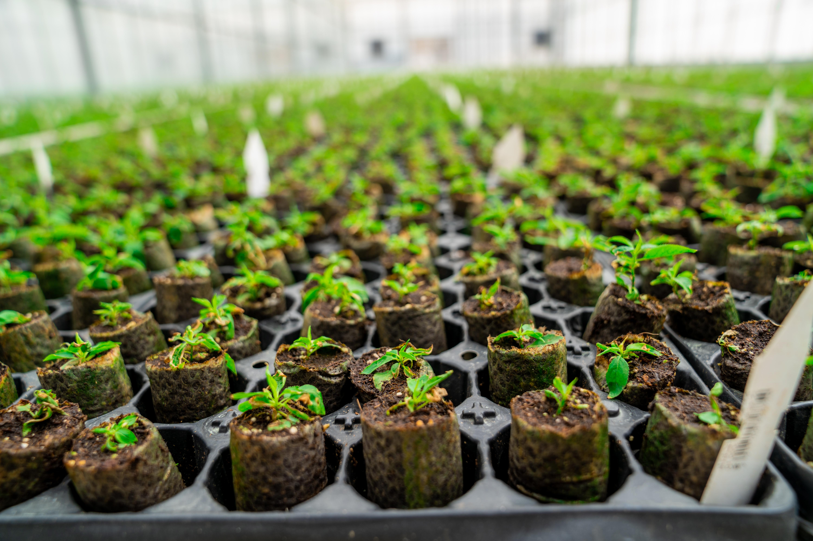

Azərbaycanda ting yetişdirmə sektorunda innovativ texnologiyadan istifadə edən “Grand-Agro Invitro” MMC ölkə tarixində ilk dəfə Qırğızıstana calaqaltılar ixracına başlayır. Bu, təkcə şirkətin tarixində deyil, Azərbaycan tarixində də ilk hadisədir.
Şirkət ümumi həcmi 100 min ədəd olan müxtəlif növdə calaqaltıları Orta Asiya ölkəsinə ixrac etməklə ölkənin qeyri-neft, o cümlədən kənd təsərrüfatına dəstək olmuş olur.
“Grand-Agro Invitro” MMC 2017-ci ildən fəaliyyətə başlamış, aqrar sektorda əsas şirkətlərdən birinə çevrilən “Agro Food Investments” MMC-nin törəmə müəssisəsidir. Hazırda, Bakının Türkan qəsəbəsi ərazisində iri tingçilik üzrə kompleksə sahibdir.
“Grand-Agro Invitro” 3 mühüm istehsal bölməsini əhatə edir. Burada,
